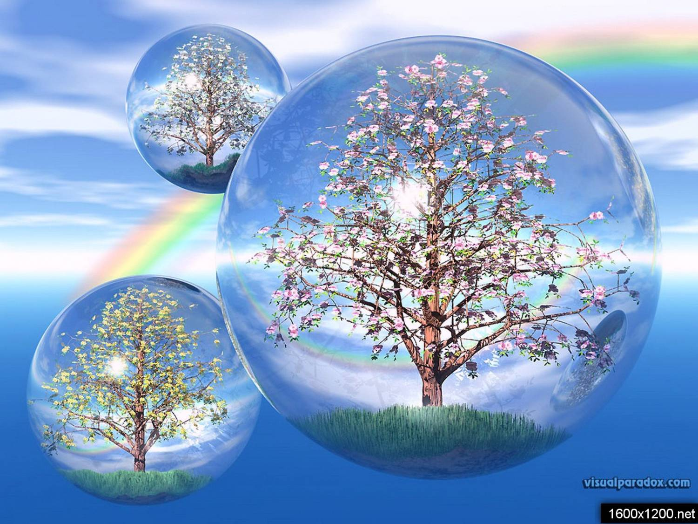

Генетическая связь поколений
Если кому-то кажется, что его личная судьба находится лишь в его собственных руках и только от него зависит ход происходящих с ним событий, то такой человек глубоко заблуждается. Влияние предков на его жизнь, как правило, гораздо сильней, чем он может об этом догадываться. Судьба человека представляет собой сложный композитный сплав его личной воли и наследственности (включая пол, расовую и национальную принадлежность, цвет кожи, волос и глаз, рост, конституцию и склонность к тем или иным заболеваниям). В чем-то человек волен, а в чем-то и неволен, в определенной степени он способен повлиять на собственное будущее, но изменить самого себя на физическом, а уж тем более на биологическом (молекулярном), уровне нам не дано.
Генетическая наследственность предопределяет самое главное, то, что мы изменить не в силах, - пол и породу. Наша жизнь подобна сложной математической задаче, в которой наследственность - это то, что дано, но есть еще нечто, что нужно доказать, выполнив ряд определенных действий. Решение этой задачи зависит уже от каждого из нас, от личного стремления индивидуума реализовать интеллектуальный, творческий и физический потенциалы, заслужив тем самым право на лучшую жизнь.
РОД (собрание душ предков), коллективная душа, пребывающая одновременно во всех живущих представителях того или иного рода, предопределяет во многом судьбу каждого из нас. Отказ же от решения генетической задачи, выполнения своего индивидуального предназначения, грозит возникновением серьезных родовых проблем, ошибкой в родовом древе, что может привести в сбою системы в целом.
Появление в родовом древе «трансформиров» - гомосексуалистов, трансвеститов, транссексуалов - свидетельство поражения Рода вирусом зла. В лучшем случае эти «мертвые», бесплодные ветви родового древа отомрут сами собой, в худшей же случае они могут поразить ближайшие ветви, и таким образом вирус размножится, в поле греха будут вовлечены новые люди, зло получит возможность дальнейшего распространения. Этим-то и опасны гомосексуальные псевдосемьи, добивающиеся в своих прав на усыновление детей, лишённых родительской опеки. Если же дети рождаются от бисексуалов, то генетическое уродство либо какой-нибудь врожденный порок им практически обеспечен. Род (собрание душ предков) просто обязан лишить их возможности к дальнейшему воспроизводству в целях собственной же безопасности, ведь в противном случае среди нас уже давно ходило бы огромное количество мутантов, монстров и прочей нечисти.
Передать в будущее поколение генетическую информацию либо блокировать дальнейшее распространение болезни, грозящей поразить другие ветви родового древа, - решать предкам, заступничество которых гарантирует здоровье, долголетие и способность к деторождению.
Появление в роду сексуальных «трансформеров», нарушающих нормальное течение живительной энергии рода по ветвям генеалогического древа, приводит к поражению целых ветвей вирусом, действие коего может оказаться в конечном итоге губительным для всего Древа.
Как бы мы ни хотели избавиться от наследственности, полностыо сделать это не удавалось еще никому. Предки подарили нам самое ценное - жизнь. За нарушение естественного роста родового древа приходится платить как самим грешникам, так их потокам, поскольку они являются прямым продолжением искаженной, скрученной ветви генеалогического древа. Дети несут ответственность за судьбу родителей, дедов, прадедов и т.д. по той простой причине, что они не появляются ниоткуда, их рождение обусловлено сложной комбинацией генов многих поколений людей. Разотождествиться с этими как минимум, с семью поколениями (а это то 126 человек!) так просто нельзя, каждый из них занимает свое строго упорядоченное положение и генетическом коде, формирующем нашу индивидуальное - то, что нами самими воспринимается как личное, индивидуальное «Я». На самом же деле в человеческой личности его собственной, сформированной им в течение жизни индивидуальности процентов тридцать, не более, всё остальное - внешность, пол, национальность, базовые модели поведения и даже характер - есть Наследие Предков. Мы не свободны и не можем быть свободны от влияния тех, кому обязаны своим появлением на свет.
С некоторыми предками нас связывает особенно устойчивая генетическая связь. Определить, с кем именно, - несложно, для этого нужно учитывать всего три фактора: внешнее сходство, совпадение дат рождения или смерти предка с днем рождения потомка, а также совпадение имени (а в случае восходящей отцовской линии фамилии) предка с именем его генетического наследника. Наличие хотя бы одного из этих трех факторов может быть косвенным указанием на взаимосвязь между судьбами предка и потомка. Совпадение двух, а уж тем более трех, наследственных факторов ставит преемника в зависимое положение по отношению к предку, и таким образом нерешенные проблемы одного поколение перекладываются на плечи другого, от дедов и прадедов к внукам и правнукам.
Человек считает свободу воли одним из самых больших благ дарованных ему судьбой. Но никто в полной мере не может быть свободен от наследственности. Для кого-то наследственность - тяжёлое бремя, а для кого-то - пропуск в мир богатых и знаменитых. Но, так или иначе, наследственность предопределяет роль Рода в жизни человека. Человек не волен полностью избавиться от влияния предков, но он волен самостоятельно распоряжаться данным ему от рождения физическим и интеллектуальным потенциалом, который ему дано либо пополнить, либо растратить.
Нам для нашего же блага просто необходимы сдерживающие факторы, воплощённые в наследственности и в кармическом потенциале Рода. В противном случае человек потерял бы голову от чувств вседозволенности и богатства предоставляемых возможностей.
В этом, казалось бы, странном, смысле заключена глубокая философская мысль о необходимости поддержание баланса между свободой и ограничением, между фантазией и холодным рассудком, потому что лишь на стыке противоположностей может родиться гармония.
Сейчас, в век научно-технического прогресса, когда генная инженерия открывает новые горизонты в области молекулярной биологии, ученым следует особенно четко осознавать границы возможно допустимой свободы в исследовании человеческой природы. Неконтролируемое развитие генетики может привести к неисчислимым бедствиям. Осознавая опасность, с которой может столкнуться человечество в ходе дальнейших экспериментов в области генетической инженерии, ряд ученых с мировым именем, в том числе лауреат Нобелевской премии Дж. Уотсон, один из создателей модели двойной спирали ДНК, выступили с обращением к Национальной академии наук США. Лейтмотивом этого обращения явилось предложение наложить запрет на некоторые работы, связанные с экспериментами по переносу генетического материала из одного организма в другой.
В целях видного самосохранения человечеству просто необходим генетический барьер, препятствующий распространению «порчи», и этот барьер, конечно же, существует. Род позаботился о том, чтобы у каждого вида живых существ было строго определенное количество хромосом, в результате чего существует видовое разграничение и у человека не может быть потомства от приматов, не говоря уже о более далёких от «homo sapiens» в биологическом смысле млекопитающих. Из 23 пар хромосом, находящихся в ядре клетки человека, лишь одна пара хромосом ответствует за размножение, половое влечение и сексуальное развитие. То, что некоторые называют ошибкой природы, и выражающейся в страстном желании какого-либо индивидуума сменить пол или хотя бы ориентацию, - следствие мутации того самого гена, отвечающего за размножение. Неправильное строение гена является врождённым признаком порочной наследственности, а вовсе не ошибкой природы. Природа ошибается гораздо реже, чем люди, склонные поддаваться соблазнам и искушениям. Природа лишь констатирует факт греха одного поколения, который в следующем поколении может стать пороком, угрожающим существованию данной ветви родового древа.
Всякие отклонения от нормы, всевозможные сексуальные перверсии предписываются в генах виде наследственной информации - простой комбинации нуклеотидов и аминокислот в длиннейшей цепи молекулы ДНК. Современные ученые считают, что информация в молекуле дезоксирибонуклеиновой кислоты (ДНК) не подвержена какой-либо коррекции в течение жизни человека, но этого просто не может быть, иначе человек был бы полностью зависим от своих предков и данного ими генетического потенциала.
В таком случае не существовало бы передачи генетического опыта, не было бы никакого интеллектуального и культурного роста человечества, а человек находился бы на уровне неандертальца и по сей день, гонялся бы за дичью с каменным топором. Человечество же, как мы видим, растет в интеллектуальном и культурном смысле, чего не могло бы быть, если бы полученный одним поколением опыт не записывался в ДНК и не передавался следующему поколению в виде наследственной информации. Даже в природе мы сплошь и рядом видим примеры «самосовершенствования» биологических видов. Популяции животных одного и того же вида, сформировавшиеся в различных климатических зонах, имеют различные типологические признаки, передающиеся по наследству вместе с необходимым для проживания в данных условиях генетическим багажом. Полярный волк почти вдвое больше живущего в средних широтах, хотя предок у них общий. В процессе приспособления к новым условиям жизни организм животного вырабатывает новые признаки, нетипичные для его предков: покровительственный окрас, длину шерсти и ногтей, строение лап и т.д. От поколения к поколению наследственные признаки совершенствуются, что способствует лучшей адаптации животного в новой среде проживания.
То же мы видим и на примере человека, на коего место проживания влияет так же, как на животное среда обитания. В относительно недалеком прошлом, когда города еще можно было назвать культурными центрами, менталитет жителей крупных городов в целом существенно отличался от менталитета населения деревень и маленьких населённых пунктов. Другие цели, другие задачи, другое ощущение хода времени, другой язык, другое всё.
Среда формирует человека, как впрочем, и человек способен оказывать влияние на среду своего обитания.
Но самое интересное в том, что предки передают не только накопленные ими материальные ценности, но и, что самое главное, генетический материал, в котором уже будут «прописаны» определённые таланты, способности, наклонности и привычки. Никого не удивляет, что в семье пианистов рождаются пианисты, в семье фигуристов - фигуристы, в семье спортсменов - спортсмены.
Людям гораздо легче воспроизводить модели поведения и профессиональные качества своих родителей, бабушек и дедушек, поскольку те, своим трудом сформировали определенные психологические программы, прописавшиеся на генетическом уровне. Воспроизвести ту или иную генетическую программу гораздо легче, чем написать свою собственную. Для этого нужно стать хозяином своей судьбы, своего Рода программистом, избавившимся от влияния предков. Человек может внести коррекцию в свою судьбу, пойти против воли предков и стать самостоятельным начинателем нового рода - патриархом. Но это возможно лишь в одном случае - когда человек проявляет ярчайшие личностные качества, затмевая своими собственными достижения предков. Если такому харизматическому человеку удастся прожить долгую яркую жизнь, то его с полным правом можно назвать патриархом - основателем фамилии (в случае использования им творческого псевдонима).
Как ни странно, но всё многообразие жизни, все человеческие судьбы с индивидуальными драмами, взлетами и падениями кодируются в генетической памяти человечества в простейшей по своему строению (и тем гениальной) молекуле ДНК. Молекула ДНК - невероятно большой по объему носитель генетической информации. Двойная спираль ДНК состоит из огромного количества попарно сопряженных атомов нуклеотидов, последовательное расположение которых и кодирует определенные наследственные признаки. Если мысленно раскрутить молекулу ДНК, ее вид будет напоминать «лестницу» боковые стороны которой образованы углеводно-фосфатными цепями, а четыре основания (по числу стихий) - аденин, тимин, гуанин и цитозин, - соединенные попарно, образуют перекладины. Вне зависимости от того, ДНК какого живого организма мы рассматриваем - человека ли, животного или растения, - везде наблюдается одна и та же молекулярная формула, состоящая из четырёх оснований, меняется лишь взаимное расположение - «первоэлементов» - четырех стихий, из которых, по представлениям древних, состоит все сущее. Цепочка нуклеотидов в каждой молекуле ДНК чрезвычайно длинна, их может быть в одном ряду по 20 000, притом, что в каждой хромосоме не менее 10000 молекул ДНК. Можно себе представить, какой фантастический объем информации записан в каждом из нас, ведь если бы можно было извлечь цепочки ДНК из всех клеток тела человека, развернуть и соединить вместе, то полученная нить протянулась бы через всю Солнечную систему. Действительно, человек - это микрокосмос!
Но, несмотря на сходство в строении ДНК всех живых организмов, населяющих нашу планету, человек все же значительно отличается от растений и животных. ДНК его состоит все из тех же четырех нуклеотидов, но генетическая молекулярная формула более длинна, и потому высокоорганизованная ДНК человека несет гораздо больше информации, чем у братьев наших меньших. Человек - развивающаяся и самообучающаяся биологическая структура. Изменение сознания не может не влиять на биосинтез. Наверняка в статичной в целом молекуле ДНК есть формирующиеся при жизни человека информационные кластеры, кодирующие события и поступки, которые в будущем поколении уже будут носить устойчивый наследственный характер. Наличие этих динамичных, формирующихся информационных кластеров - атомов дезоксирибонуклеиновой кислоты - пока еще научно не установлено, но ведь человечество ещё пятьдесят лет назад ничего не знало о спиральном строении молекулы ДНК и о том, что в состав ее длиннейших цепочек входят тысячи нуклеотидов, фосфатов и углеводов.
Человеческий зародыш, формируясь в утробе матери из оплодотворенной зиготы (яйцеклетки), наследует 23 хромосомы от матери и столько же от отца. В этом наборе закодирована информация о цвете волос, конституции, росте, национальной принадлежности, функционировании внутренних органов, наследственных болезнях, синтезе белков и т.д. Информационная нить длиной в Солнечную систему половины от матери, половина - от отца, а в центре человеческая индивидуальность - как Солнце, новая жизнь, новое «Я». И от того, какую жизнь проживёт человек, как он распорядится генетическим потенциалом, зависит будущее не только его, но и его потомков. В этом и есть проявление высшей свободы - зная о духовном, информационном и генетическом наследии предков, сознательно сделать несколько эволюционных шагов, тем самым в какой-то степени улучшив свою «породу».
Свободы жаждет каждая личность, каждый, кто хоть как-то заявил о себе. Но большинство людей, к сожалению, трактуют понятие свободы как возможность безответственной и бесконтрольной растраты физического, духовного, творческого и материального потенциала, доставшегося ему по праву рождения. На самом же деле, подлинная свобода воли есть не что иное, как данная нам от Рода возможность преодоления собственной косности, слабости, ущербности, свобода стать лучше, чем мы есть от рождения. Только таким образом мы можем внести лепту в дело эволюционного развития своего рода, народа и, в конечном итоге, всего человечества.
Использованная литература: Глоба П. Зодиакальный прогноз на 2009 год. – М.: Яуза, Эксмо, 2008. – 1996 с.